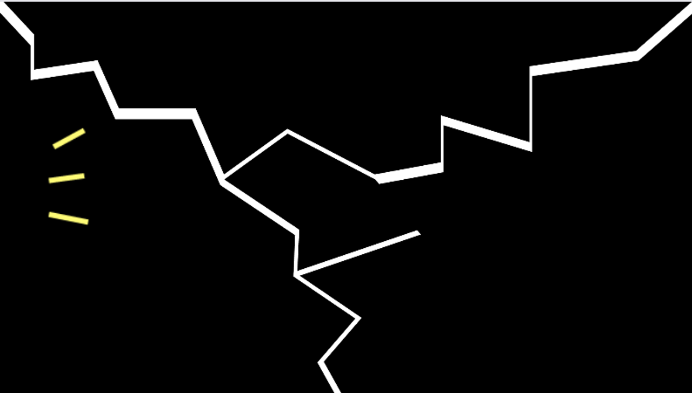
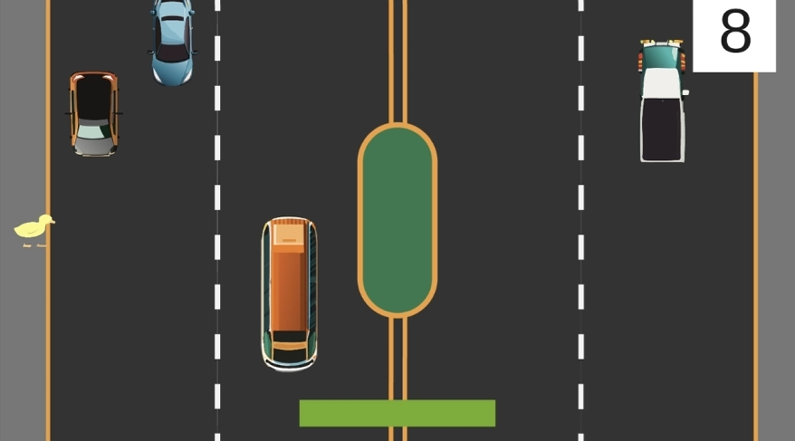
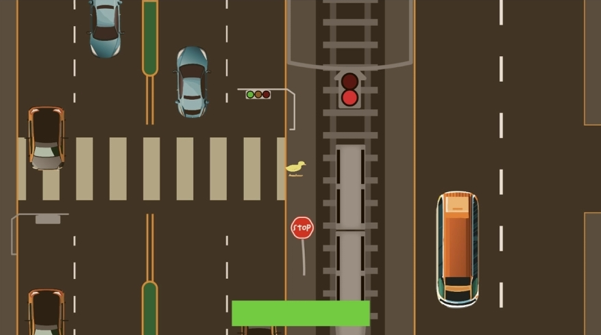
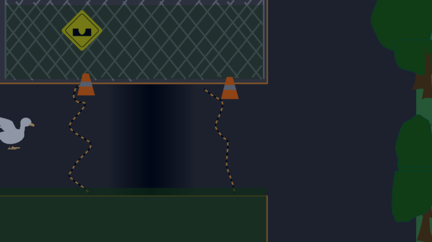
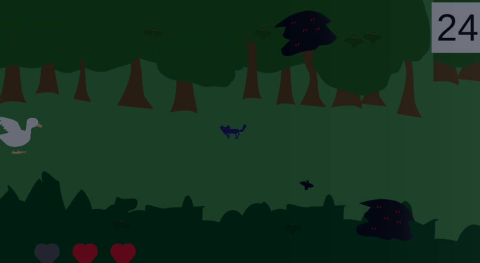
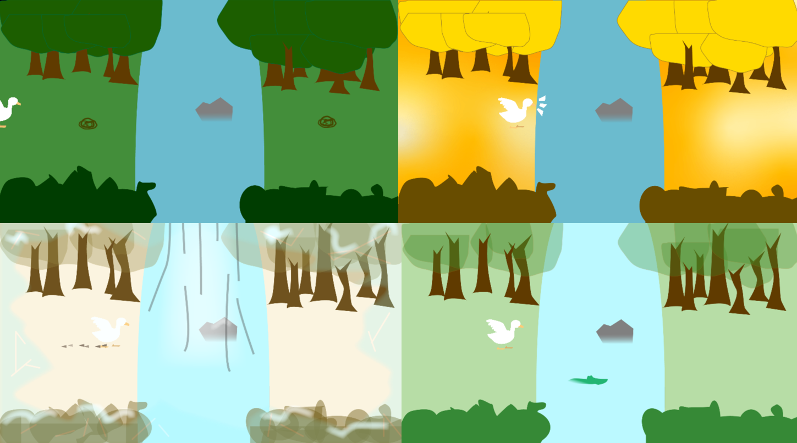
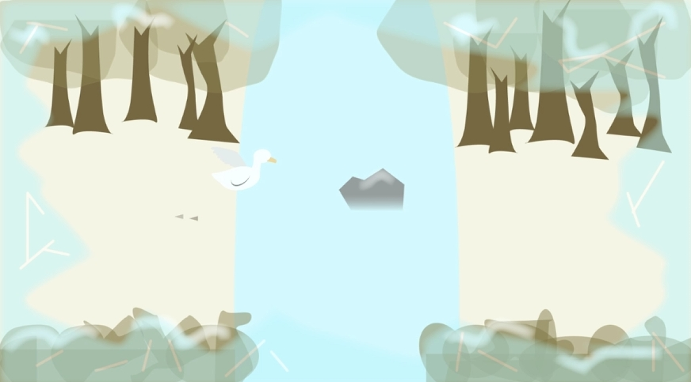

What is Duckrossing
"Duck Crossing Teaser" editor: Yu Zhou
Duckrossing is a final project of CIM504 Designing Playful Experience, instructed by Professor Lindsay Grace, designed and developed by Yu Zhou, Lejie Lin and Shangshu Shi in four weeks span.
People say "walk a mile in someone's shoes" so that you can truly understand the other`s situations, and Duckrossing is such a game. It provides a 10 minutes playful experience with alternative controller which let player walks in duck feet, control in-game movement by physically moving their legs, and use two arms to control wings for flying. Player will take on an adventure of a new born duck who cross from noon to midnight, city to wild, and from a baby to a parent.
This Alternative Controls not only challenges player`s physical skills but also fosters a deeper connection between their physical actions and in-game avatar movements and offers a higher level of engagement that cannot be replicated through standard controllers such as keyboards, mouse, and controllers.
Alternative Controller
Design & Fabricated by Yu Zhou with Assisstant of Lejie Lin
"Duck Crossing Behind scene, early planning, and alternative controller" editor: Lejie Lin
The initial version of the controller was specifically crafted for our prototype game, "Men Crossing," and featured only feet control. It is constructed from cardboard sourced from package boxes, players could effortlessly control movement by stepping on it.
After we changed our title and game concept into Duckrossing, we were considering add arm controls featuring flying ability in game. The images above demonstrate how the arm control works in version 2.0 of the controller.
The images above demonstrate how the arm and legs control works in version 3.0 of the controller. Below is the video of a walkthrough of the current controller: from feet, to waist, to arms and hands. This version accommodates players with a physical height of up to 7.2 feet.
Designer: Yu Zhou Developer: Yu Zhou
This is the intro level of Duckrossing where players are placed inside the egg trying to break the shell by moving arms and legs.
Designer:Lejie Lin, Yu Zhou Developer: Lejie Lin, Yu Zhou
Level 1 introduces a dynamic scenario on a two-way, undertaking the challenge of traversing the thoroughfare with caution. Negotiating the journey entails encountering diverse vehicles with varying speeds. The stakes are high, as any collision with a vehicle results in immediate failure. Furthermore, players must be attuned to maintaining a specific walking rhythm, avoiding the pitfall of stretching their legs too far apart,. Interestingly, even successful crossings don't guarantee success, as players risk being penalized for jaywalking. The unconventional resolution to this level is abstaining from crossing altogether; after a 30-second interval, players seamlessly progress to the next stage, aligning with the game creator's intent to discourage risky behavior.
Designer:Lejie Lin Developer: Lejie Lin
In the second level, players are tasked with adhering to traffic signals, ensuring a safe crossing only when the red light halts the flow of traffic. Upon reaching the opposite side, a railroad crossing introduces an additional challenge—players must patiently wait for a passing train before continuing safely. A noteworthy development occurs at the conclusion of this level: the little duck undergoes a growth spurt, transforming into grown up duck and thereby preparing itself for the impending challenges that lie ahead
Designer: Yu Zhou, Shangshu Shi Developer: Yu Zhou
In the third level, player now as a grown up duck, is finally able to fly with their wings. Their wing-flapping skill will be tested with a mudpit at the middle of road. It is a basic flying ability check, and revealing the movement and limitations of flying to players.
Designer: Shangshu Shi Developer: Shangshu Shi
The fourth level combines all the challenges players have faced. Bats emerge from a dark , requiring players to either keep moving forward or fly high to dodge them. A swift wolf adds another layer of danger, demanding quick reactions to take off. And there is a health system balancing the constant threat of bats with the occasional lethal challenge of the dog: deducts one heart for bat attacks and all hearts for dog encounters.
Designer:Yu Zhou Developer: Yu Zhou
In this level, our Duck routinely cross the current, facing various dangers like sleeping snakes, alert crocodiles, human hunters, and harsh weather. Players must adeptly balance running and flying to navigate these hazards across the four seasons. Instead of intensifying difficulty for reflex and skill challenges, this level is designed as an experiential journey, brimming with unexpected surprises and dangersDucks routinely traverse the river, facing various dangers like sleeping snakes, alert crocodiles, human hunters, and harsh weather. Players must adeptly balance running and flying to navigate these hazards across the four seasons. Instead of intensifying difficulty for reflex and skill challenges, this level is designed as an experiential journey, brimming with unexpected surprises and dangers
Designer:Yu Zhou Developer:Yu Zhou
In the ending, the grown duck meets the mate of life. As the player slowly steps into another duck and falls in love, the black screen fades away: the familiar egg breaking scene come into view. This is the circle of life, the end and the restart of Duckrossing.
Sound Design
The sound design of the duck crossing comes in a multi-dimensional idea. It both attempts to recreate the experience of playing as a duck, as realistic as possible, and has the desire of fitting everything into that kind of “cartoonish” and “fun-experience” while everything still fits itself into a serious pondering question of animal cruelty that this world is constantly facing.
The general workflow of the sound design is two-folded. For most of the workflow, I have to wait for the general game system to be finished so that I can go ahead and insert my sound into the game system, while incorporating the game system with the dynamic sound system that I designed. This can be seen at a lot of places, such as the way how a round-robin system would be applied to the footstep and wing-flapping system so that players feel more immersed into the game, but also one of the fun part where the player will hear the intensity of the frostbite to the duck when player’s frost condition is getting worse. The developing ideology of the idea is that we want the sound to be integrated, instead of being “attatched” to the system and can interactively provide players an “UI-like” experience.
Of course, lots of things have been carefully planned out and went through numerous iterations to reach the final result. For example, we extracted multiple kinds of sounds of the duck- From the typical American duck to African duck to get the best desired sound that both fits into the cartoonish vibe that the game provides, but also makes it more realistic compared to the typical “donald the duck” kinds of absurdity. In the end, around 80-90 sound file were put into the game so that we can cover the variety of worlds that the duck crosses throughout the game. From the most modern city to the wildest part of the woods and lake, we attempted to make sure that players feel like they are actually experiencing the situation that the duck is trying to cross.
Given my role as the sole team member with art experience, particularly in Adobe Illustrator, I took on the responsibility of creating all art assets for the game. Considering time constraints, overall workload, and my skill level, I opted for a relatively simple style, using basic graphics and a limited color palette to convey scenes like time changes, night atmospheres, and the four seasons and in-game NPCs, such as bats and crocodiles. However, during the creation of the top view of the vehicle, my stick figure version was eventually replaced with artwork generated by the Illustrator's own AI after a team discussion.
| Yu Zhou | Game Designs | Other Projects | ||
|---|---|---|---|---|
| Timely Shot | Physical Computings | |||
| Before the Rainstorm | Visual Designs | |||
| yxz1655@miami.edu | Duckrossing | Esports Podcasts | ||
| zhylouis0606@gmail.com | Motion Pictures |